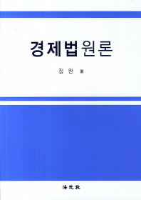
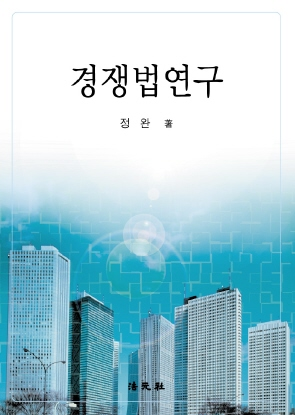
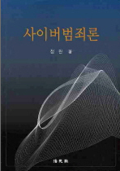
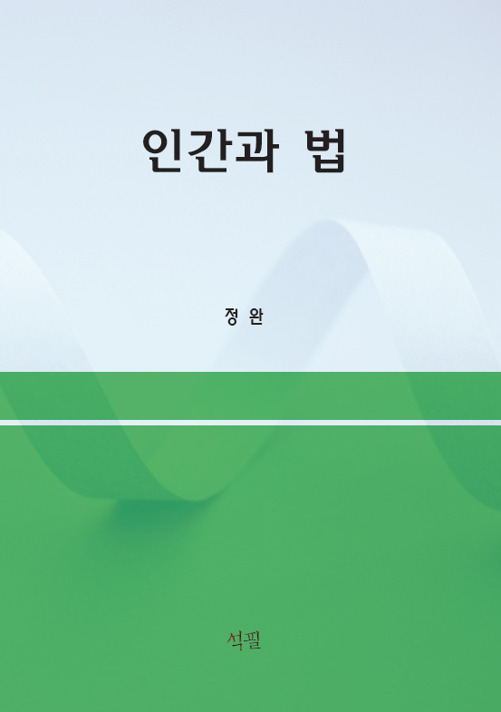

* 귀하는 번째 방문자입니다.
제1회 대한민국 사이버치안대상 대통령표창
마르퀴즈 후즈후 인더월드 5년 연속 등재
IBC 및 ABI 인명사전 등재
미국 와이오밍로스쿨 방문교수
안녕하세요
홈페이지를 찾아주신 여러분을 환영합니다.
법이란 무엇인가, 그리고
법이란 어떠한 것이어야 하는가에 대하여
깊이 생각해 보는 시간이 되시기 바랍니다.
감사합니다.
mail to : 정완 교수
(전화) 02-961-9259, 010☆5292☆0228
인간과 법 포럼
Human & Law Forum
designed by Wanlaw
그림을 클릭하세요!

경제법원론
  
경쟁법연구
사이버범죄론
인간과 법

인터넷법연구

디지털사회의 문화

인터넷과 법

미국의 형사절차